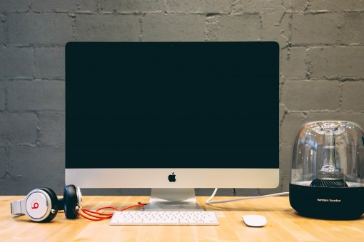

Windows, ¿El sistema operativo 2022?
Windows es el principal OS, con más del 80% de los usuarios con ordenadores actualmente, que usan este SO. Esto se debe entre otras cosas a su extremadamente intuitiva interfaz, la gran cantidad de aplicaciones en mercado, o que es el principal sistema para el que se diseña el hardware.

Características técnicas
Desarrollador: Microsoft
Núcleo: Monolítico o Híbrido (depende de la versión)
Programado en: C, C++ y lenguaje ensamblador
Plataformas admitidas: ARM, Arquitectura Intel Itanium, Intel Itanium, MIPS, DEC Alpha, PowerPC y x86
Licencia: Microsoft CLUF
Ventajas e inconvenientes con respecto a otros OS
Interfaz gráfica intuitiva y fácil: Al ser el más usado y estar respaldados por muchos años de experiencia, la interfaz gráfica ha ido mejorando hasta los niveles de naturalidad que ahora alcanza.
Alta cantidad de software: Gracias a la gran cantidad de soporte con que cuenta y la facilidad de programación, por lo que cuenta con una gran variedad de software muy amplia que facilita el trabajo.
Requerimientos de hardware elevados: Al ir mejorando los equipos con el tiempo, las versiones de Windows que han ido apareciendo, han ido requiriendo más y más recursos para alcanzar sus funcionalidades avanzadas.
Hardware comúnmente orientado a él: La mayoría de fabricantes, crean sus equipos y hardware pensando en su uso para este sistema operativo, por lo que el hardware está adaptado a sus necesidades.
Soporte de la comunidad: Al tener tal cantidad de usuarios, cuenta con muchos foros, documentación y ayuda de la comunidad para solucionar problemas comunes y realizar procesos cotidianos.
Gráficos de alta calidad: Este es uno de los puntos fuertes de siempre de esta opción, y es que es el favorito de jugadores o editores gráficos debido a su gran procesamiento y especialización gráfica.
Licencia no gratis: Como supongo ya sabes, Windows puede ser utilizado sin licencia, pero si se quieren todas las funcionalidades que ofrece, se requiere una licencia de activación, la cual va desde los 20€ hasta los 150€ ependiendo del proveedor y de la versión.

Conclusión
Debido a las características de Windows, este es es el sistema operativo perfecto para usuarios que puedan costearse la barata licencia que posee (o puedan conseguirla de otra manera). Sobre todo si no es un experto en otros sistemas operativos, en cuyo caso lo lógico sería usar aquel que domina bien.
Lo que debes saber antes de decidirte por Windows
Actualmente existen básicamente dos opciones serias en windows: Windows 10 y Windows 11. Como consideramos que es importante saber cual elegir para tu caso concreto, te dejamos aquí un vídeo expliando las diferencias y ventajas entre ellos.